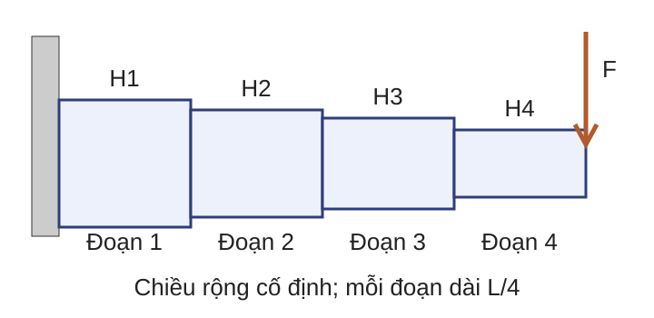

A. Nhận dạng
Miền, độ cong, kiểu đại lượng
→
Cải dạng
Bảo toàn nghiệm hoặc giá trị
→
Biểu thức không giống khuôn chuẩn chưa đủ để kết luận bài toán không lồi.
Nhu cầu xuất phát từ giới hạn của bộ giải: cùng một bài toán có thể khó nhận dạng ở biểu diễn ban đầu nhưng rõ cấu trúc sau một phép biến đổi tương đương. Chuyển ý: bắt đầu bằng một biểu diễn che khuất cấu trúc, rồi mới rút ra khuôn tổng quát.
Nguồn: Boyd & Vandenberghe (2004), §§4.1–4.2.
Biểu diễn tương đương làm lộ cấu trúc Biểu diễn ban đầu $$\frac{x_1}{1+x_2^2}\le0,\qquad (x_1+x_2)^2=0.$$
Mẫu số dương; bình phương bằng không chỉ khi cơ số bằng không.
Biểu diễn tương đương $$x_1\le0,\qquad x_1+x_2=0.$$
Tập khả thi là một tia affine: $(x_1,x_2)=(-s,s)$, $s\ge0$.
Tương đương ở đây nghĩa là hai biểu diễn có cùng tập khả thi.
Vì $1+x_2^2>0$ với mọi $x_2\in\mathbb R$, nhân hai vế không đổi chiều. Vì $u^2=0\Leftrightarrow u=0$, ràng buộc đẳng thức được tuyến tính hóa chính xác. Không áp dụng suy luận này cho bất đẳng thức $(x_1+x_2)^2\le c$ mà không xét $c$.
Nguồn: Nguyễn Bích Vân, Chương 3, phần 2, mục bài toán tương đương; ví dụ được tính lại.
Bài toán tối ưu tổng quát Ví dụ trước cho thấy cần tách biểu diễn khỏi đối tượng toán học. Cho miền $D\subseteq\mathbb R^n$, hàm mục tiêu $f_0:D\to\mathbb R$ và các hàm ràng buộc $f_i,h_j:D\to\mathbb R$:
$$\begin{aligned}\operatorname*{minimize}_{x\in D}\quad & f_0(x)\\\text{với}\quad & f_i(x)\le0,\ i=1,\ldots,m,\\&h_j(x)=0,\ j=1,\ldots,p.\end{aligned}$$
$\mathcal F$ là tập khả thi; $p^*=\inf_{x\in\mathcal F}f_0(x)$.
$p^*=+\infty$ nếu $\mathcal F=\varnothing$. $p^*=-\infty$ nếu bài toán không bị chặn dưới. Đây là nền ký hiệu sau ví dụ dẫn nhập, không phải điểm xuất phát của khái niệm. Phân biệt infimum với minimum: $p^*$ có thể hữu hạn nhưng không đạt được. Chuyển ý: thêm giả thiết lồi vào khuôn chung sẽ cho dạng chuẩn và các phép cải dạng có chứng nhận.
Nguồn: Boyd & Vandenberghe (2004), §4.1.
Dạng chuẩn của tối ưu lồi $$\min_{x\in D} f_0(x)\quad\text{với }f_i(x)\le0,\ Ax=b.$$
$D$ lồi; $f_0,\ldots,f_m$ lồi; $A\in\mathbb R^{p\times n}$, $b\in\mathbb R^p$.
Khử đẳng thức $x=Fz+x_0$
$\operatorname{range}(F)=\ker A$, $Ax_0=b$.
Biến dư $a^Tx\le b$
$\Longleftrightarrow\exists s\ge0:a^Tx+s=b$.
Epigraph $\min t$ với $f_0(x)\le t$
và giữ mọi ràng buộc gốc.
Đẳng thức trong dạng chuẩn phải affine. Khử đẳng thức cần chọn $x_0$ khả thi và các cột của $F$ sinh đúng không gian nghiệm thuần nhất $\ker A$. Biến dư có lượng từ tồn tại. Cải dạng epigraph thay mục tiêu bằng $t$ nhưng không bỏ miền $D$, các bất đẳng thức $f_i(x)\le0$ hoặc đẳng thức $Ax=b$.
Nguồn: Boyd & Vandenberghe (2004), §§4.2, 4.6; Nguyễn Bích Vân, Chương 3, phần 2.
Hàm tựa lồi và kiểm tra mức Định nghĩa $f:D\to\mathbb R$ tựa lồi khi
$$S_t=\{x\in D:f(x)\le t\}$$
lồi với mọi $t\in\mathbb R$.
Ví dụ trên $[0,2]$ $$f(x)=\frac{x^2+1}{x+2}$$
$$\phi_t(x)=x^2+1-t(x+2)$$
$t<0$: $S_t=\varnothing$, nên $S_t$ lồi.
$t\ge0$: $S_t=\{x\in[0,2]:\phi_t(x)\le0\}$ lồi.
Tập rỗng được xem là lồi, nên phải xét cả $t<0$. Với $t\ge0$, $\phi_t$ lồi theo $x$ và mẫu $x+2$ dương trên miền, do đó tập mức dưới lồi. Ví dụ này cũng là hàm lồi; nó chỉ minh họa tiêu chuẩn tập mức dùng được cho lớp tựa lồi rộng hơn. A07, ca 2 mới cung cấp trường hợp tựa lồi nhưng không lồi để phân biệt hai lớp.
Nguồn: Boyd & Vandenberghe (2004), §4.2.5; ví dụ được tính lại.
Chia đôi trên giá trị mục tiêu Đầu vào: $l\le p^*\le u$, dung sai $\varepsilon>0$ và bộ kiểm tra $S_t\ne\varnothing$.
Vòng $t=(l+u)/2$ $S_t\ne\varnothing$? Khoảng mới 1 $0{,}5$ Khả thi $[0,0{,}5]$ 2 $0{,}25$ Không khả thi $[0{,}25,0{,}5]$ 3 $0{,}375$ Không khả thi $[0{,}375,0{,}5]$
Khả thi: $u\leftarrow t$; không khả thi: $l\leftarrow t$.
Đầu ra: $[l,u]$ chứa $p^*$; dừng khi $u-l\le\varepsilon$.
Cột thứ ba trả lời câu hỏi tập mức $S_t$ có khác rỗng hay không; “khả thi” nghĩa là tồn tại $x\in D$ sao cho $f(x)\le t$. Ví dụ dùng cận đầu $[0,1]$. Ở vòng 1, $\phi_{0{,}5}(x)=x(x-0{,}5)$ nên $S_{0{,}5}=[0,0{,}5]$. Ở hai vòng sau, biệt thức âm nên tập kiểm tra rỗng. Đối chiếu: $x^*=\sqrt5-2$, $p^*=2\sqrt5-4\approx0{,}4721$. Sau $k$ vòng, độ rộng không quá $(u_0-l_0)/2^k$.
Nguồn: Boyd & Vandenberghe (2004), §4.2.5; phép tính được kiểm tra lại.
Phân loại và cải dạng Câu hỏi: với mỗi bài toán, nêu miền, phép biến đổi và kết luận lồi hoặc tựa lồi.
$\min_x\max\{x,-x+2\}$. $\min_{x\in[-1,1]}x^3$. $\min_x x^2$ với $(x-1)^2=0$. Đáp án: (1) hàm cực đại của hai hàm affine là lồi; epigraph cho LP $\min t$ với $x\le t$, $-x+2\le t$. (2) $x^3$ tăng nên mọi tập mức dưới trên $[-1,1]$ là một khoảng; hàm tựa lồi nhưng không lồi vì đạo hàm bậc hai $6x$ đổi dấu. (3) đẳng thức tương đương $x=1$ nên biểu diễn tương đương là bài toán lồi. Chuyển ý: sau khi đã phân biệt cấu trúc qua tập mức, phần B áp dụng cùng pipeline nhận dạng–chứng nhận cho các lớp LP, QP và QCQP.
Nguồn: Bài tập tự tạo theo Boyd & Vandenberghe (2004), §§3.4, 4.2, 4.6; đáp án được tính lại.
B. LP
Mục tiêu và ràng buộc affine
⊂
⊂
QCQP
Ràng buộc bậc hai lồi
Phân cấp này nói về biểu diễn chuẩn: LP là trường hợp $P=0$ của QP; QP là trường hợp các ma trận bậc hai trong ràng buộc bằng không của QCQP. Chuyển ý: bắt đầu với lớp tuyến tính.
Nguồn: Boyd & Vandenberghe (2004), §§4.3–4.4.
Ví dụ phân bổ tuyến tính $$\min_{x_1,x_2}\ x_1+2x_2\quad\text{với }x_1+x_2\ge3,\ x_1,x_2\ge0.$$
Dịch đường mức theo chiều giảm cho tới khi chạm miền: $x^*=(3,0)$, $p^*=3$.
Từ $x_1+x_2\ge3$, ta có $x_1+2x_2=(x_1+x_2)+x_2\ge3$. Dấu bằng cần $x_1+x_2=3$ và $x_2=0$, suy ra nghiệm duy nhất $(3,0)$. Hình tự vẽ chỉ hiển thị một cửa sổ hữu hạn của miền khả thi thực tế không bị chặn; vùng có nhãn, đường biên có phương trình và mũi tên chỉ chiều dịch nên màu không phải tín hiệu duy nhất.
Nguồn: Ví dụ tự tạo theo dạng LP; phép tính được kiểm tra lại.
Quy hoạch tuyến tính $x,c\in\mathbb R^n$; $A\in\mathbb R^{m\times n}$, $b\in\mathbb R^m$; $G\in\mathbb R^{p\times n}$, $h\in\mathbb R^p$:
$$\operatorname*{minimize}_x\ c^Tx\quad\text{với }Ax\le b,\ Gx=h.$$
Tập khả thi là một đa diện lồi. Đường mức $c^Tx=\alpha$ là các siêu phẳng song song. Kết quả có thể là nghiệm đạt được, vô nghiệm hoặc không bị chặn. Trang khái quát hóa trực giác đường mức của ví dụ phân bổ ngay trước và nêu đủ kích thước. Không khẳng định nghiệm luôn nằm tại một đỉnh nếu chưa có giả thiết thích hợp. Chuyển ý: khi sai số bình phương tạo độ cong, ta cần một lớp rộng hơn LP.
Nguồn: Boyd & Vandenberghe (2004), §4.3.
Hồi quy bình phương tối thiểu có ràng buộc $$\min_{0\le x\le1}(x-1)^2+(x-3)^2.$$
Không ràng buộc $f'(x)=4x-8=0\Rightarrow x=2$, không khả thi.
Có ràng buộc $f$ giảm trên $[0,1]$; $x^*=1$, $p^*=4$.
Với $A\in\mathbb R^{m\times n}$, $b\in\mathbb R^m$, $A^\dagger b$ là nghiệm có chuẩn Euclid nhỏ nhất trong tập nghiệm của $\min_{z\in\mathbb R^n}\|Az-b\|_2^2$.
$A^\dagger\in\mathbb R^{n\times m}$ là giả nghịch đảo Moore–Penrose. Trong AI, đây là mô hình hồi quy tuyến tính khi tham số bị chặn để phản ánh miền hợp lệ hoặc quy định mô hình. Chỉ khi $A$ hạng cột đầy đủ mới viết $A^\dagger=(A^TA)^{-1}A^T$. Ví dụ vô hướng cho $f(1)=4$ và minh họa việc nghiệm không ràng buộc có thể bị phép chiếu miền thay đổi.
Nguồn: Boyd & Vandenberghe (2004), §§1.2, 4.4; ví dụ được tính lại.
QP với ràng buộc simplex $$\min_{x_1,x_2}\ x_1^2+4x_2^2\quad\text{với }x_1+x_2=1,\ x_1,x_2\ge0.$$
Thế $x_2=1-x_1$:
$$g(x_1)=5x_1^2-8x_1+4,\qquad g'(x_1)=10x_1-8.$$
$x^*=(0{,}8,0{,}2)$; $p^*=0{,}8$.
Điểm dừng $x_1=0{,}8$ thuộc $[0,1]$; $g''=10>0$ nên là nghiệm duy nhất. Giá trị là $0{,}64+4(0{,}04)=0{,}8$. Ví dụ cho thấy hệ số độ cong lớn hơn làm tọa độ tương ứng nhỏ hơn.
Nguồn: Ví dụ tự tạo theo dạng QP; phép tính được kiểm tra lại.
Quy hoạch bậc hai $x,q\in\mathbb R^n$, $P\in\mathbb S_+^n$, $r\in\mathbb R$; $A\in\mathbb R^{m\times n}$, $b\in\mathbb R^m$; $G\in\mathbb R^{p\times n}$, $h\in\mathbb R^p$:
$$\min_x\ \tfrac12x^TPx+q^Tx+r\quad\text{với }Ax\le b,\ Gx=h.$$
$P\succeq0$ chứng nhận mục tiêu lồi; $P\succ0$ cho mục tiêu lồi chặt và nhiều nhất một nghiệm tối ưu.
Ví dụ bình phương tối thiểu và ví dụ simplex cho hai kiểu độ cong được gom bởi ma trận $P$. Nếu $P\succeq0$ nhưng suy biến, nghiệm có thể không duy nhất. Chuyển ý: trước khi mở rộng sang ràng buộc bậc hai, cần thấy điều gì hỏng khi ma trận không PSD.
Nguồn: Boyd & Vandenberghe (2004), §4.4.1.
Ma trận bất định có thể phá tính lồi Xét tập
$$C=\{(x_1,x_2)\in\mathbb R^2:x_1^2-x_2^2\le1\}.$$
Ma trận của dạng toàn phương là $\operatorname{diag}(1,-1)$, không PSD.
Hai điểm khả thi $a=(\sqrt2,1)$ và $b=(\sqrt2,-1)$.
Cả hai cho $x_1^2-x_2^2=1$.
Trung điểm không khả thi $(a+b)/2=(\sqrt2,0)$.
$(\sqrt2)^2-0^2=2>1$.
Phản ví dụ chứng minh trực tiếp $C$ không lồi. Nó cũng cho thấy một bất đẳng thức bậc hai với ma trận bất định không phải QCQP lồi theo dạng chuẩn.
Nguồn: Phản ví dụ tự tạo theo Boyd & Vandenberghe (2004), §4.4.2; phép tính được kiểm tra lại.
QCQP lồi $x,q_i\in\mathbb R^n$, $P_i\in\mathbb S_+^n$, $r_i\in\mathbb R$; $A\in\mathbb R^{p\times n}$, $b\in\mathbb R^p$:
$$\begin{aligned}\min_x\quad&\tfrac12x^TP_0x+q_0^Tx+r_0\\\text{với}\quad&\tfrac12x^TP_ix+q_i^Tx+r_i\le0,\ i=1,\ldots,m,\\&Ax=b.\end{aligned}$$
Mỗi $P_i\succeq0$ chứng nhận hàm bậc hai tương ứng lồi.
QCQP là quy hoạch bậc hai có ràng buộc bậc hai. Phản ví dụ ngay trước cho thấy một $P_i$ bất định có thể làm tập khả thi không lồi; vì vậy dấu PSD là chứng nhận, không phải chi tiết ký hiệu. Chuyển ý: áp dụng ngay chứng nhận này cho giao của hai miền ellipse trước khi làm bài tổng hợp LP–QP.
Nguồn: Boyd & Vandenberghe (2004), §4.4.2.
Kiểm tra một QCQP cụ thể $$\begin{aligned}\operatorname*{minimize}_{x\in\mathbb R^2}\quad&-x_1-x_2\\\text{với}\quad&x_1^2+4x_2^2\le4,\\&(x_1-1)^2+(x_2-1)^2\le2.\end{aligned}$$
Kiểm tra PSD Xác định Hessian của mục tiêu và hai hàm ràng buộc.
Nhận dạng miền Mô tả hình học tập khả thi và kết luận tính lồi.
Câu hỏi: bài toán có phải QCQP lồi không? Nêu đủ chứng nhận.
Đáp án: mục tiêu affine nên Hessian bằng $0$. Hai Hessian ràng buộc lần lượt là $\operatorname{diag}(2,8)\succ0$ và $2I\succ0$. Mỗi bất đẳng thức mô tả phần trong của một ellipse; tập khả thi là giao hai miền ellipse nên lồi. Điểm $(0{,}8,0{,}7)$ cho thấy giao khác rỗng. Trang chỉ đo nhận dạng miền và PSD, không yêu cầu giải nghiệm tối ưu. Chuyển ý: bài tiếp theo dùng một miền đa diện chung để phân biệt LP với QP và tính nghiệm bằng công cụ đã học.
Nguồn: Bài tập tự tạo theo Boyd & Vandenberghe (2004), §4.4.2; các Hessian và điểm khả thi được kiểm tra lại.
Bài tập trên một miền khả thi chung Với $\mathcal F=\{x\in\mathbb R_+^2:2x_1+x_2\ge1,\ x_1+3x_2\ge1\}$, giải ba ca:
Ca a $\min_{x\in\mathcal F}x_1+x_2$
Ca c $\min_{x\in\mathcal F}x_1$
Ca e $\min_{x\in\mathcal F}x_1^2+9x_2^2$
Câu hỏi: phân loại từng ca; tìm nghiệm hoặc tập nghiệm và giá trị tối ưu.
Giải bằng hình học của đa diện và bất đẳng thức sơ cấp. (a) Hai đường biên cắt nhau tại $(2/5,1/5)$; trên các tia biên còn lại, $x_1+x_2$ tăng, nên $x^*=(2/5,1/5)$ và $p^*=3/5$. (c) Cận dưới $x_1\ge0$ đạt được khi $x_1=0$; khi đó hai ràng buộc cho $x_2\ge1$, nên tập nghiệm là $\{(0,x_2):x_2\ge1\}$ và $p^*=0$. (e) Với mọi $x$, $x_1^2+9x_2^2-\tfrac12(x_1+3x_2)^2=\tfrac12(x_1-3x_2)^2\ge0$, nên với mọi điểm khả thi, $x_1^2+9x_2^2\ge\tfrac12(x_1+3x_2)^2\ge1/2$. Dấu bằng cần $x_1=3x_2$ và $x_1+3x_2=1$, cho $(1/2,1/6)$; điểm này thỏa ràng buộc còn lại vì $2x_1+x_2=7/6$. Hessian của ca e là $\operatorname{diag}(2,18)\succ0$.
Nguồn: Bài tập tuần 3, Bài 1, các ca a, c, e; đề được khôi phục đúng miền chung và kết quả được tính lại.
C. Biểu thức thực tế Tích, lũy thừa và tổng các đại lượng dương.
Ví dụ: diện tích, công suất, độ trễ.
Khoảng trống Dạng ban đầu không nhất thiết lồi theo biến $x$.
Phép log làm lộ cấu trúc log-tổng-mũ.
Nhu cầu: mô hình kỹ thuật thường dùng quan hệ nhân và tỷ lệ, không nằm trực tiếp trong LP hoặc QP. Điều kiện biến dương là thiết yếu cho lũy thừa thực và phép log. Chuyển ý: một bài toán tích đơn giản sẽ cho thấy cấu trúc trước khi đặt tên các viên gạch hình thức.
Nguồn: Boyd & Vandenberghe (2004), §4.5.
Ví dụ tích dưới ngân sách $$\min_{x,y>0}(xy)^{-1}\quad\text{với }x+y\le4.$$
Chia ràng buộc cho $4$: $0{,}25x+0{,}25y\le1$, là tổng các hạng dương.
Trực giác Giảm $(xy)^{-1}$ tương đương tăng tích $xy$.
Tính toán Bất đẳng thức trung bình cộng–trung bình nhân (AM–GM):
$\sqrt{xy}\le\dfrac{x+y}{2}\le2$, suy ra $xy\le4$.
Dấu bằng khi $x=y=2$; do đó $\min (xy)^{-1}=1/4$.
Bất đẳng thức trung bình cộng–trung bình nhân dùng $x,y>0$: $\sqrt{xy}\le(x+y)/2$, với dấu bằng khi và chỉ khi $x=y$. Kết hợp với $x+y\le4$ cho $xy\le4$; để đạt dấu bằng đồng thời cần $x=y=2$. Ví dụ chứa tích lũy thừa ở mục tiêu và tổng hạng dương ở ràng buộc. Chuyển ý: hai dạng biểu thức này được gọi là đơn thức và đa thức dương, rồi được gom vào dạng chuẩn GP.
Nguồn: Ví dụ tự tạo theo dạng GP; phép tính được kiểm tra lại.
Đơn thức và đa thức dương Trên miền $x\in\mathbb R_{++}^n$:
Đơn thức $$g(x)=c\prod_{j=1}^n x_j^{a_j}$$
$c>0$, $a_j\in\mathbb R$.
Đa thức dương (posynomial) $$f(x)=\sum_{k=1}^K c_k\prod_{j=1}^n x_j^{a_{kj}}$$
$c_k>0$; tổng hữu hạn các đơn thức.
Số mũ có thể âm hoặc không nguyên; hệ số phải dương.
Đa thức dương khác đa thức thông thường vì cho phép số mũ thực và không cho hệ số âm. Miền dương không được bỏ. Tên tiếng Anh posynomial được nêu một lần để đối chiếu giáo trình.
Nguồn: Boyd & Vandenberghe (2004), §4.5.1.
Dạng chuẩn của GP Biến $x\in\mathbb R_{++}^n$; $f_0,\ldots,f_m$ là đa thức dương; $g_1,\ldots,g_p$ là đơn thức:
$$\begin{aligned}\operatorname*{minimize}_{x>0}\quad&f_0(x)\\\text{với}\quad&f_i(x)\le1,\ i=1,\ldots,m,\\&g_j(x)=1,\ j=1,\ldots,p.\end{aligned}$$
GP không nhất thiết là bài toán lồi theo biến $x$, nhưng có phép đổi biến chính xác sang dạng lồi.
Không gọi một đẳng thức đa thức dương bằng 1 là hợp lệ; đẳng thức trong GP phải là đơn thức bằng 1. Hệ số và miền dương đảm bảo log được xác định.
Nguồn: Boyd & Vandenberghe (2004), §4.5.2.
Phép đổi biến log Đặt $y_j=\log x_j$, tức $x_j=e^{y_j}$.
Đơn thức $g(e^y)=c\exp(a^Ty)$.
$\log g(e^y)=a^Ty+\log c$ là affine.
Đa thức dương $f(e^y)=\sum_k e^{a_k^Ty+\log c_k}$.
$\log f(e^y)$ là log-tổng-mũ, nên lồi.
Lấy log mục tiêu không đổi nghiệm vì $\log$ tăng nghiêm trên $\mathbb R_{++}$.
Sau biến đổi, ràng buộc $f_i(x)\le1$ thành $\log f_i(e^y)\le0$; $g_j(x)=1$ thành $a_j^Ty+\log c_j=0$. Đây là bài toán lồi theo $y$.
Nguồn: Boyd & Vandenberghe (2004), §4.5.3.
GP chuẩn hóa cho dầm công-xôn 
Chọn $h_i>0$; $d=(0{,}1,0{,}2,0{,}3,0{,}4)$ là hệ số minh họa.
Đặt $y_i=\log h_i$ để làm lộ cấu trúc lồi.
$$\min_h\sum_{i=1}^4h_i\quad\text{với }\sum_{i=1}^4d_i h_i^{-3}\le1.$$
$$\min_y\log\!\sum_i e^{y_i}\quad\text{với }\log\!\sum_i d_i e^{-3y_i}\le0.$$
Hình được vẽ lại cục bộ để chỉ quan hệ giữa chiều cao và tải. Đây là mô hình chuẩn hóa minh họa, không phải dữ liệu thực nghiệm: mục tiêu đại diện thể tích khi các đoạn có cùng chiều dài và bề rộng; tổng các lũy thừa âm đại diện một giới hạn độ võng đã chuẩn hóa. Hai công thức đặt toàn chiều rộng để tránh cắt khi chiếu hoặc ở màn hình hẹp.
Nguồn: Boyd & Vandenberghe (2004), §4.5 và ví dụ thiết kế hình học; hệ số minh họa và hình do nhóm bài giảng tự tạo.
Đổi log một GP $$\min_{u,v>0}\ 2u^{-1}v^{-1}+uv^{-2}\quad\text{với }0{,}5u+0{,}25v\le1.$$
Câu hỏi: đặt $y_1=\log u$, $y_2=\log v$ và viết bài toán lồi tương đương.
Đáp án: cực tiểu $\log\!\left(2e^{-y_1-y_2}+e^{y_1-2y_2}\right)$ với $\log\!\left(0{,}5e^{y_1}+0{,}25e^{y_2}\right)\le0$. Cả hai là log-tổng-mũ của các hàm affine. Chuyển ý: GP xử lý tích và lũy thừa bằng đổi biến; phần D mở rộng ngôn ngữ ràng buộc bằng cách thay thứ tự vô hướng bằng thứ tự theo nón cho ma trận và vector mục tiêu.
Nguồn: Bài tập tự tạo theo Boyd & Vandenberghe (2004), §4.5; phép biến đổi được kiểm tra lại.
D. Ràng buộc ma trận Ổn định, trị riêng và bất định không thể luôn viết gọn bằng bất đẳng thức vô hướng.
Nhiều mục tiêu Không có một thứ tự toàn phần khi các tiêu chí cạnh tranh.
Hai nhu cầu dùng chung một ý: thay thứ tự vô hướng bằng thứ tự sinh bởi một nón. Với ma trận đối xứng, nón PSD tạo bất đẳng thức ma trận; với vector mục tiêu, nón trực giao dương tạo quan hệ trội.
Nguồn: Boyd & Vandenberghe (2004), §§2.4, 4.6.
Thứ tự theo nón Cho không gian vector hữu hạn chiều $E$ và nón lồi, đóng, nhọn $K\subseteq E$ có phần trong khác rỗng:
$$u\preceq_K v\quad\Longleftrightarrow\quad v-u\in K.$$
Vector $E=\mathbb R^q$, $K=\mathbb R_+^q$.
$u_i\le v_i$ với mọi $i$.
Ma trận đối xứng $E=\mathbb S^r$, $K=\mathbb S_+^r$.
$X\preceq Y\Leftrightarrow Y-X\succeq0$.
“Nhọn” loại trừ đường thẳng và giúp quan hệ phản đối xứng. Dùng $r$ cho cấp ma trận để không nhầm với số biến quyết định $n$. Trong các trang sau, ký hiệu $\preceq$ cho ma trận luôn theo nón PSD, không phải so sánh từng phần tử.
Nguồn: Boyd & Vandenberghe (2004), §2.4.
Trực quan chặn trị riêng Với $A(x)=\operatorname{diag}(x,2-x)\in\mathbb S^2$, cần chọn một cận chung $t$ cho hai trị riêng:
$$\min_{x,t\in\mathbb R}t\quad\text{với }A(x)\preceq tI.$$
Vì ma trận là đường chéo, điều kiện này tương đương $t\ge x$ và $t\ge2-x$.
$$t\ge\max\{x,2-x\}\ge1.$$
Cân bằng hai trị riêng cho $x^*=1$, $t^*=1$; các trang sau gọi biểu diễn này là LMI.
Trang đặt ví dụ trước định nghĩa hình thức. Với ma trận đường chéo, $tI-A(x)$ nửa xác định dương đúng khi từng phần tử đường chéo không âm. Dấu bằng trong $\max\{x,2-x\}\ge1$ xảy ra khi $x=2-x$. Chuyển ý: ví dụ cho thấy bất đẳng thức ma trận có thể mã hóa nhiều cận vô hướng; tiếp theo đặt nó vào khuôn tối ưu nón và SDP.
Nguồn: Ví dụ tự tạo theo Boyd & Vandenberghe (2004), §4.6.3; phép tính được kiểm tra lại.
Dạng tối ưu nón $x,c\in\mathbb R^n$; $A\in\mathbb R^{p\times n}$, $b\in\mathbb R^p$; $G:\mathbb R^n\to E$ tuyến tính, $h\in E$:
$$\min_x c^Tx\quad\text{với }Ax=b,\quad h-Gx\in K.$$
LP $E=\mathbb R^m$, $K=\mathbb R_+^m$.
$h-Gx\in K\Leftrightarrow Gx\le h$.
SDP $E=\mathbb S^r$, $K=\mathbb S_+^r$.
Ánh xạ affine ma trận phải PSD.
Khuôn này tách không gian biến $\mathbb R^n$ khỏi không gian thứ tự $E$. Hai trường hợp LP và SDP đủ cho tuyến bài hiện tại; bỏ lớp trung gian không được phát triển để tránh tạo tuyến phụ. Chuyển ý: chuyên biệt ánh xạ affine ma trận sẽ cho dạng SDP chính thức.
Nguồn: Boyd & Vandenberghe (2004), §§4.3, 4.6.2.
Quy hoạch nửa xác định Cho $c\in\mathbb R^m$ và $F_0,\ldots,F_m\in\mathbb S^n$:
$$\operatorname*{minimize}_{x\in\mathbb R^m}\ c^Tx\quad\text{với }F(x)=F_0+\sum_{i=1}^m x_iF_i\succeq0.$$
$F(x)$ là ánh xạ affine vào không gian ma trận đối xứng. Ràng buộc $F(x)\succeq0$ là bất đẳng thức ma trận tuyến tính (LMI). Tập khả thi lồi vì là nghịch ảnh affine của $\mathbb S_+^n$. Phải nêu kiểu: biến $x$ là vector, còn $F_i$ là ma trận đối xứng $n\times n$. LMI có thể biểu diễn chặn trị riêng, chuẩn phổ và nhiều thư giãn ma trận.
Nguồn: Boyd & Vandenberghe (2004), §4.6.2.
Mẫu nhận dạng LMI khối Với $A\in\mathbb R^{m\times n}$ và $t\in\mathbb R$:
$$\|A\|_2\le t\quad\Longleftrightarrow\quad
\begin{bmatrix}tI_m&A\\A^T&tI_n\end{bmatrix}\succeq0.$$
Trực giác vô hướng Với $A=[a]$, điều kiện PSD tương đương $t\ge|a|$.
Dấu hiệu nhận dạng Chặn chuẩn phổ → ma trận khối affine → LMI.
Đây là mẫu nhận dạng, không yêu cầu chứng minh bằng bổ đề Schur trong bài này. Tương đương kéo theo $t\ge0$; không nhầm chuẩn phổ với chuẩn Frobenius. Nhánh SDP đến đây đi từ thứ tự PSD tới một biểu diễn hữu ích. Chuyển ý: cùng thứ tự theo nón sẽ được dùng lại cho vector mục tiêu khi sai số và chi phí cạnh tranh.
Nguồn: Boyd & Vandenberghe (2004), §§A.5.5, 4.6.
Một đường đánh đổi liên tục Thứ tự theo nón cũng so sánh vector mục tiêu, không chỉ ràng buộc ma trận. Với $x\in[0,2]$:
$$\Phi(x)=\bigl(x^2,(x-2)^2\bigr).$$
Mục tiêu thứ nhất $\Phi_1=x^2$ Khi $x$ tăng, $\Phi_1$ tăng từ $0$ đến $4$.
Mục tiêu thứ hai $\Phi_2=(x-2)^2$ Khi $x$ tăng, $\Phi_2$ giảm từ $4$ đến $0$.
Không có điểm nào cải thiện một mục tiêu mà không làm xấu mục tiêu kia.
Nếu $0\le x<y\le2$, thì $\Phi_1(x)<\Phi_1(y)$ nhưng $\Phi_2(x)>\Phi_2(y)$. Do đó không điểm nào trội điểm kia theo $\mathbb R_+^2$. Ví dụ tạo nhu cầu phân biệt “nhỏ nhất” với “tối tiểu”; thuật ngữ hình thức được đặt ở trang tiếp theo. Kết luận chỉ áp dụng trên miền $[0,2]$.
Nguồn: Ví dụ tự tạo theo tối ưu vector; lập luận được kiểm tra lại.
Tập mục tiêu và điểm tối tiểu Ví dụ trước tạo tập đạt được $\mathcal O=\Phi(\mathcal F)$. Với thứ tự $\preceq_K$:
Phần tử nhỏ nhất $y^*\preceq_K y$ với mọi $y\in\mathcal O$.
Có thể không tồn tại.
Phần tử tối tiểu Không có $y\ne y^*$ trong $\mathcal O$ sao cho $y\preceq_Ky^*$.
Tương ứng nghiệm Pareto.
Định nghĩa phần tử tối tiểu dùng quan hệ thứ tự bộ phận do nón nhọn $K$ đã thiết lập ở D02; tính nhọn bảo đảm tính phản đối xứng của quan hệ. Đường đánh đổi ngay trước cho thấy vì sao không nên đòi một điểm nhỏ nhất: hai mục tiêu đổi chiều nên không điểm nào trội tất cả. “Tối tiểu” chỉ có nghĩa là không bị điểm khác trội. Chuyển ý: để chọn một điểm trong biên Pareto, ta đưa ưu tiên vào bằng trọng số.
Nguồn: Boyd & Vandenberghe (2004), §4.7.
Vô hướng hóa bằng trọng số $$\min_{0\le x\le2}\ \lambda x^2+(1-\lambda)(x-2)^2.$$
$0<\lambda<1$ Hai trọng số dương; $x^*(\lambda)=2(1-\lambda)$ là nghiệm Pareto được hỗ trợ.
Điểm biên $\lambda=1\Rightarrow x^*=0$; $\lambda=0\Rightarrow x^*=2$.
Trong AI, $\lambda$ có thể cân bằng sai số dự đoán và chi phí suy diễn; tập mục tiêu không lồi có thể còn điểm Pareto không được tổng trọng số sinh ra.
Vô hướng hóa áp dụng cho $\Phi(x)=(x^2,(x-2)^2)$ ở trang trước. Phân biệt trọng số dương nghiêm ngặt với hai đầu mút có một trọng số bằng không. Trong ví dụ lồi này, toàn bộ $[0,2]$ được quét. Liên kết AI: một mô hình chính xác hơn có thể tốn thêm độ trễ hoặc năng lượng; $\lambda$ mã hóa ưu tiên triển khai nhưng không tự quyết định đơn vị hay chuẩn hóa hai tiêu chí.
Nguồn: Boyd & Vandenberghe (2004), §4.7.4; phép tính được kiểm tra lại.
Bài tập SDP và Pareto Câu hỏi: giải bài chặn trị riêng và xác định các điểm không bị trội.
Chặn trị riêng $$\min_{x,t\in\mathbb R}t\quad\text{với }\operatorname{diag}(3-x,x)\preceq tI.$$
Tìm $x^*,t^*$.
Quan hệ trội Xét $(1,4)$, $(2,2)$, $(4,1)$, $(3,3)$.
Tìm các điểm không bị trội.
Đáp án: cân bằng $3-x=x$ cho $x^*=1{,}5$, $t^*=1{,}5$. Ba điểm $(1,4),(2,2),(4,1)$ không bị trội; $(3,3)$ bị $(2,2)$ trội vì cả hai tọa độ không lớn hơn và có ít nhất một tọa độ nhỏ hơn.
Nguồn: Bài tập tự tạo theo Boyd & Vandenberghe (2004), §§4.6–4.7; đáp án được kiểm tra lại.